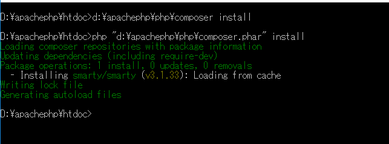
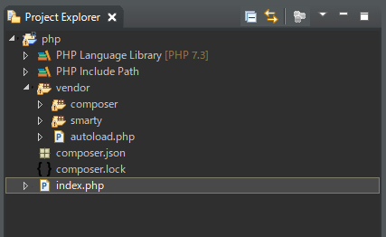
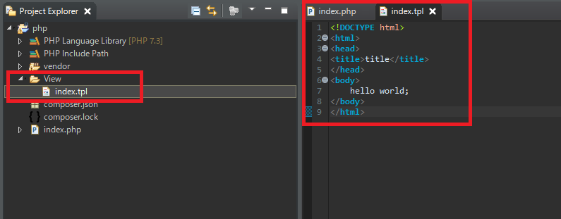
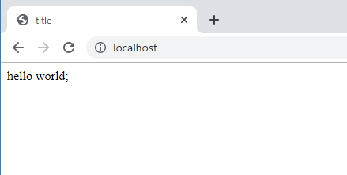
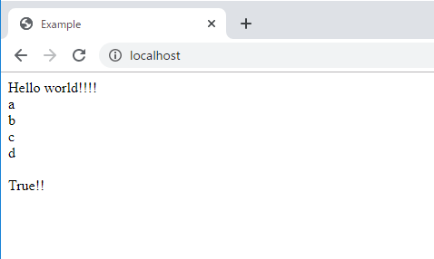

[PHP] PHPのコーディング領域とデザイン領域を分離するテンプレートライブラリ Smarty
こんにちは。明月です。
今まで、我々はPHPを作成する時にPHPコードとhtmlコードを混ぜて作成しました。
簡単な仕様ならhtmlデザインパートとスクリプトパートが一緒にあるから楽かも知りませんが、少し複雑になるし大きくなるとソースコードが複雑になるでしょう。
昔はPHPにもクラス概念がある前には単一ページ作成方法(PHPスクリプトとhtmlコードが混在)でよく作成しました。(必ずそのことではないけど、普通はそうだったです。)
最近はhtmlタグ構成、CSSスタイルコード、javascriptコードも複雑になってその上でPHPコードまであるとすごく複雑なソースことになるでしょう。
開発する時に可読性は重要な部分なので、その時にはスクリプトコードとhtmlコードを分ける必要があります。
Java(spring)やC#(MVC)にはMVCモデルのフレームワークがあります。MVCモデルとはModel(オブジェクト)、View(htmlデザイン)、Controller(ロジック)を分けて作成する方法です。
PHPにもCakeというMVCモデルがあります。でも、Cakeにもコントロールとビューが分けていますが、ビューがPHPコードになっているので、完全な分離だと思いません。
それでPHPにはテンプレートフレームがありますが、それがSmartyとTwigです。
筆者はTwigよりSmartyが手に慣れているので、Smartyを使っています。SmartyとTwigは使用方法が全然違うテンプレートですが、パフォーマンスや概念は似ています。
link - https://www.smarty.net/
Smartyを利用するためにcomposerでSmartyをダウンロードしましょう。
repository - https://packagist.org/packages/smarty/smarty
{
"require": {
"smarty/smarty": "~3.1"
}
}


EclipseのExplorerでたまにエラーマークが表示される時があります。実際にエラーではないので気にしなくてもよいです。EclipseがPHPソースを完全に解読できないらしいです。
<?php
// composerのautoloadを呼出す。このファイルは必須で宣言しなければならないのでrequireで宣言する。
require_once 'vendor/autoload.php';
// ドキュメントルート設定
$ROOT = $_SERVER ["DOCUMENT_ROOT"];
// Smartクラスを宣言
$smarty = new Smarty();
// htmlテンプレートファイルディレクト設定
$smarty->template_dir = $ROOT.'/View';
// キャッシュのファイルディレクトリ設定
$smarty->compile_dir = $ROOT . '/../Smarty/templates_c';
$smarty->cache_dir = $ROOT . '/../Smarty/cache';
$smarty->config_dir = $ROOT . '/../Smarty/configs';
// index.tplテンプレートを読み込む。
$smarty->display('index.tpl');
?>
<!DOCTYPE html>
<html>
<head>
<title>title</title>
</head>
<body>
hello world;
</body>
</html>

index.phpファイルでSmartyクラスを宣言してテンプレートディレクトリ設定をします。キャッシュ設定もありますが、しなくても構いません。
その後、smartyインスタンスでdisplay関数で「index.tpl」ファイルを読み込みます。

phpファイルでhtmlテンプレートファイルを読み込んでresponseするのは理解しました。
そうするとphpのデータ値をテンプレートに渡す方法とSmarty文法に関して確認しましょう。
<?php
// ライブラリを読み込む
require_once 'vendor/autoload.php';
// ドキュメントルートを設定
$ROOT = $_SERVER["DOCUMENT_ROOT"];
// Smartyインスタンス生成
$smarty = new Smarty();
$smarty->template_dir = $ROOT . '/View';
$smarty->compile_dir = $ROOT . '/../Smarty/templates_c';
$smarty->cache_dir = $ROOT . '/../Smarty/cache';
$smarty->config_dir = $ROOT . '/../Smarty/configs';
// Nodeクラス
class Node {
// データの種類は３つがある。 str、配列、ブールタイプ。
private $data = "Hello world!!!!";
private $dataarray = [];
private $databoolean = true;
// コンストラクタにメンバー変数の配列にデータを格納する。
public function __construct() {
array_push($this->dataarray, "a");
array_push($this->dataarray, "b");
array_push($this->dataarray, "c");
array_push($this->dataarray, "d");
}
// メンバー変数dataのgetter
public function getData1() {
return $this->data;
}
// メンバー変数dataarrayのgetter
public function getData2() {
return $this->dataarray;
}
// メンバー変数databooleanのgetter
public function getData3() {
return $this->databoolean;
}
}
// titleのキーに「Example」データを格納する。
$smarty->assign("title", "Example");
// dataのキーにNodeクラスのインスタンスを格納する。
$smarty->assign("data", new Node());
//テンプレート呼出す。
$smarty->display('index.tpl');
?>
<!DOCTYPE html>
<html>
<head>
<!-- titleのキーを表示する。-->
<title>{$title}</title>
</head>
<body>
<!-- dataのキーのデータのgetData1の関数を呼出して表示する。-->
{$data->getData1()}
<br />
<!-- dataのキーのデータのgetData2関数を呼出してイタレーション配列を繰り返す。 -->
{foreach from = $data->getData2() item = item}
{$item}<br />
{/foreach}
<br />
<!-- dataのキーのデータのgetData2関数を呼出してブールチェックを行う。-->
{if $data->getData3()}
True!!
{else}
False!!
{/if}
</body>
</html>

phpからSmartyテンプレートに値を渡す時にはasign関数を利用するとできます。上の例は変数を２つを渡しました。
titleの変数はstringタイプでdataのタイプはクラスオブジェクトタイプで渡しました。
tplページをみればstringタイプの場合はそのまま表示すると表示できます。オブジェクトの場合はphpの中のオブジェクト参照方法みたいにやじるしで参照します。
foreachとif文法の使用方法もあります。
foreachの場合、fromでイタレーション配列を入れ、一つのデータをitemで取得します。
ifの場合はgetData3から取得したデータがブール値です。
Smarty文法に関しては下記のホームページから説明しています。
- [PHP] 自動require及びincludeをする方法(spl_autoload_register)2020/02/05 03:00:00
- [PHP] 匿名関数(ラムダ式)とクロージャ(closure)2020/02/04 03:00:00
- [PHP] PHPのコーディング領域とデザイン領域を分離するテンプレートライブラリ Smarty2020/02/02 03:00:00
- [PHP] Reflection - Variable編2020/02/01 03:00:00
- [PHP] Reflection - Method編2020/01/31 03:00:00
- [PHP] Reflection - Class編2020/01/30 03:00:00
- [PHP] エラーページ処理方法(追加: ob_cleanとdie関数使用方法)2020/01/29 03:00:00
- [PHP] 分散設定ファイル(.htaccess) 使用方法2020/01/28 03:00:00
- [PHP] データベース(mariaDB)を連結して使う方法2020/01/24 03:00:00
- [PHP] IOに関して2020/01/23 03:00:00
- [PHP] requireとinclude、そして「@」の使用方法2020/01/22 03:00:00
- [PHP] Fatal及びNotice,、Warningメッセージ処理する方法2020/01/19 03:00:00
- [PHP] xDebug設定する方法2020/01/18 03:00:00
- [PHP] $_SERVER, $GLOBALS, $_GET, $_POST, $_REQUEST, $_COOKIE, $_SESSION, $_FILES, $_ENV(getenv())2020/01/17 03:00:00
- [PHP] データ確認関数(var_dump, debug_zval_dump, print_r)2020/01/16 03:00:00
- [PHP] 自動require及びincludeをする方法(spl_autoload_register)2020/02/05 03:00:00
- [PHP] 匿名関数(ラムダ式)とクロージャ(closure)2020/02/04 03:00:00
- [PHP] PHPのコーディング領域とデザイン領域を分離するテンプレートライブラリ Smarty2020/02/02 03:00:00
- [PHP] Reflection - Variable編2020/02/01 03:00:00
- [PHP] Reflection - Method編2020/01/31 03:00:00
- [PHP] Reflection - Class編2020/01/30 03:00:00
- [PHP] エラーページ処理方法(追加: ob_cleanとdie関数使用方法)2020/01/29 03:00:00
- [PHP] 分散設定ファイル(.htaccess) 使用方法2020/01/28 03:00:00
- [PHP] データベース(mariaDB)を連結して使う方法2020/01/24 03:00:00
- [PHP] IOに関して2020/01/23 03:00:00
- [PHP] requireとinclude、そして「@」の使用方法2020/01/22 03:00:00
- [PHP] Fatal及びNotice,、Warningメッセージ処理する方法2020/01/19 03:00:00
- [PHP] xDebug設定する方法2020/01/18 03:00:00
- [PHP] $_SERVER, $GLOBALS, $_GET, $_POST, $_REQUEST, $_COOKIE, $_SESSION, $_FILES, $_ENV(getenv())2020/01/17 03:00:00
- [PHP] データ確認関数(var_dump, debug_zval_dump, print_r)2020/01/16 03:00:00